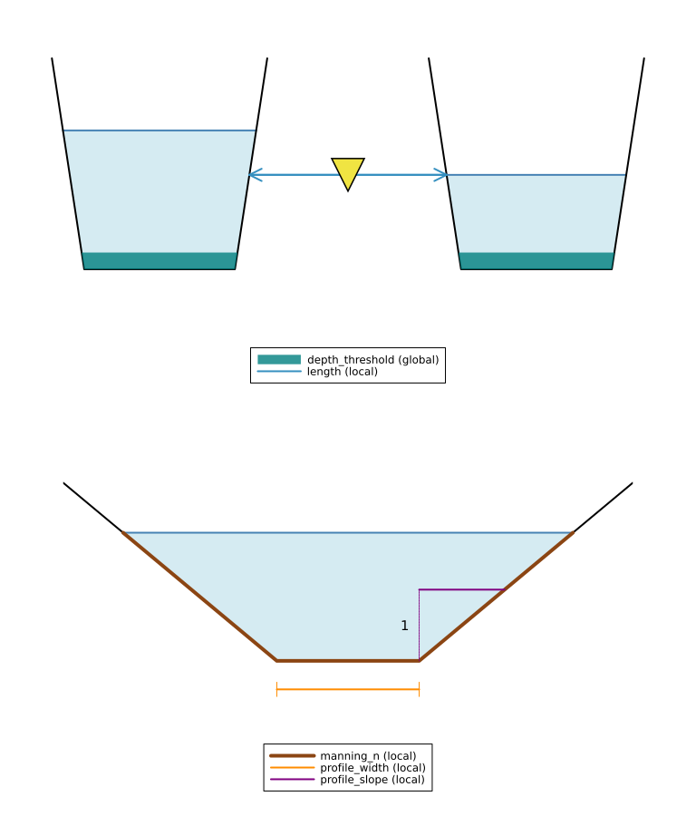
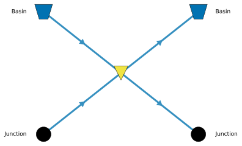
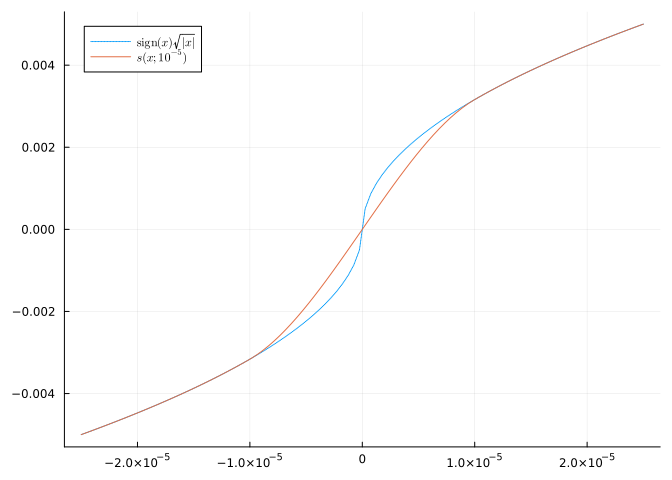

Code
include("../../../utils/plot_connector_schematic.jl")
plot_connector_schematic(:ManningResistance)
The ManningResistance node calculates a flow rate between two Basins based on their water levels. The flow rate is calculated by conservation of energy and the Manning-Gauckler formula to estimate friction losses.
include("../../../utils/plot_connector_schematic.jl")
plot_connector_schematic(:ManningResistance)
The diagram below shows which node types are allowed directly upstream (left) and downstream (right) of this node. This is a connectivity illustration, not a valid simulation model.
include("../../../utils/plot_node_connectivity.jl")
plot_node_connectivity("ManningResistance")
include("../../../utils/gen_docs_table.jl")
table_from_schema(
Ribasim.Schema.ManningResistance.Static;
restrictions = Dict(
:length => "positive",
:manning_n => "positive",
:profile_width => "non-negative, not zero together with profile_slope",
),
)| column | type | unit | optional | restriction |
|---|---|---|---|---|
| node_id | Int32 | - | x | - |
| length | Float64 | m | x | positive |
| manning_n | Float64 | s m⁻¹ᐟ³ | x | positive |
| profile_width | Float64 | m | x | non-negative, not zero together with profile_slope |
| profile_slope | Float64 | - | x | - |
| control_state | String | - | ✓ | - |
ManningResistance simulates steady flow between Basins through a reach described by a trapezoidal profile and a Manning roughness coefficient.
We describe the discharge from Basin \(a\) to Basin \(b\) solely as a function of the water levels in \(a\) and \(b\).
\[ Q = f(h_a, h_b) \]
Where:
The energy equation for open channel flow is:
\[ H = h + \frac{v^2}{2g} \]
Where:
The discharge \(Q\) is defined as:
\[ Q = Av \]
where \(A\) is cross-sectional area.
We use conservation of energy to relate the total head at \(a\) to \(b\), with \(H_a > H_b\) as follows:
\[ H_a = H_b + h_{\text{loss}} \]
Or:
\[ h_a + \frac{v_a^2}{2g} = h_b + \frac{v_b^2}{2g} + h_{\text{loss}} \]
Where \(v\) is the average water velocity. \(h_{\text{loss}}\) is a combination of friction and contraction/expansion losses:
\[ h_{\text{loss}} = S_f L + \frac{C}{2g} \left(v_b^2 - v_a^2\right) \]
Where:
We assume velocity differences in a connection are negligible (\(v_a = v_b\)):
\[ h_a = h_b + S_f L \]
Friction losses are computed with the Gauckler-Manning formula:
\[ Q = \frac{A}{n} R_h^\frac{2}{3} \sqrt{S_f} \]
Where:
We can rewrite to express \(S_f\) in terms of Q:
\[ S_f = Q^2 \frac{n^2}{A^2 R_h^{4/3}} \]
No water is added or removed in a connection:
\[ Q_a = Q_b = Q \]
Substituting:
\[ h_a = h_b + Q^2 \frac{n^2}{A^2 R_h^{4/3}} L \]
We can then express \(Q\) as a function of head difference \(\Delta h\):
\[ Q = \textrm{sign}(\Delta h) \frac{A}{n} R_h^{2/3}\sqrt{\frac{|\Delta h|}{L} } \]
The \(\textrm{sign}(\Delta h)\) term causes the direction of the flow to reverse if the head in basin \(b\) is larger than in basin \(a\). Below we call the Basin the water comes from the upstream Basin, with level \(h_\text{up}\) and bottom \(z_\text{up}\), and the other one the downstream Basin, with level \(h_\text{dn}\) and bottom \(z_\text{dn}\).
The factor \(\frac{A}{n} R_h^{2/3}\) is evaluated at the water depth of each end of the reach, and the two values are averaged. Since the upstream depth is always included, a Basin can receive water after it has gone dry.
The Gauckler-Manning formula describes uniform flow in a channel. On its own it has no upper bound: when the downstream Basin lies far below the upstream one, it gives a supercritical flow that keeps growing as the downstream Basin fills. Two limits from open channel hydraulics are therefore added, both based on the critical depth.
For a specific energy \(E\) the critical depth \(d_c\) is the depth at which the flow is maximal, where
\[ d_c + \frac{A(d_c)}{2 T(d_c)} = E \]
with \(T\) the width of the water surface. For the trapezoidal profile this is the positive root of
\[ 5 s\, d_c^2 + (3 w - 4 s E)\, d_c - 2 w E = 0, \]
which is \(\frac{2}{3}E\) for a rectangle and \(\frac{4}{5}E\) for a triangle. The corresponding critical flow is
\[ Q_c = A(d_c) \sqrt{\frac{g A(d_c)}{T(d_c)}}. \]
The first limit is on the downstream water level. At a free overfall the water surface sits at critical depth, not at the level of whatever Basin lies below, so the downstream depth used in the formula is
\[ d_\text{dn} = \max\left(h_\text{dn} - z_\text{dn},\; d_c(h_\text{up} - z_\text{dn})\right) \]
and the head difference that drives the flow is \(\Delta h = h_\text{up} - (z_\text{dn} + d_\text{dn})\), which lies between \(0\) and \(h_\text{up} - h_\text{dn}\). As a result the flow into an empty or nearly empty downstream Basin does not depend on how far below the reach that Basin is.
The second limit is on the flow itself. The flow is controlled at the sill, the cross-section at the higher of the two bottoms \(z_\text{sill} = \max(z_\text{up}, z_\text{dn})\), with the head \(E = h_\text{up} - z_\text{sill}\) above it. With a depth \(d\) over the sill and the velocity head there fully lost, the most that can pass the sill is
\[ Q_s = A(d) \sqrt{2 g \left(E - d\right)}, \qquad d = \max\left(h_\text{dn} - z_\text{sill},\; d_c(E)\right). \]
While the downstream level is below \(z_\text{sill} + d_c\) the sill is free, \(d = d_c\), and \(Q_s\) is the critical flow \(Q_c(E)\), since \(E - d_c = A / (2T)\). When the downstream level rises above it the sill is drowned, and \(Q_s = A(d) \sqrt{2 g (h_\text{up} - h_\text{dn})}\) goes to zero as the levels meet. The critical depth is the depth at which \(A(d)\sqrt{2g(E - d)}\) is maximal, so \(Q_s\) and its derivative are continuous where the sill drowns.
A cap that does not go to zero with the level difference, such as the critical flow alone, would make the flow jump between \(+Q_c\) and \(-Q_c\) when the levels cross. That happens when the Manning flow is large for a tiny level difference, for instance next to a Basin whose profile reaches far below the sill.
The diagram below shows how the two flows are computed and combined.
flowchart TD
L["Basin levels h_up, h_dn"] --> M
L --> S
subgraph M["Manning flow Q_m"]
M1["downstream depth at least the critical depth"] --> M2["Q_m from the Gauckler-Manning formula"]
end
subgraph S["Sill flow Q_s at the higher bottom"]
S0{"h_dn below z_sill + d_c?"}
S0 -- "yes: free sill" --> S1["Q_s = critical flow"]
S0 -- "no: drowned sill" --> S2["Q_s = A(d) √(2 g Δh), zero at equal levels"]
end
M --> Q["Q = smooth minimum of Q_m and Q_s"]
S --> Q
The Manning flow \(Q_m\) and the sill flow \(Q_s\) are combined with a smooth minimum
\[ Q = \frac{Q_\text{lo}}{\left(1 + (Q_\text{lo} / Q_\text{hi})^{16}\right)^{1/16}}, \]
with \(Q_\text{lo}\) and \(Q_\text{hi}\) the smaller and larger of the two. The exponent is large enough that the reduction is below \(0.2\%\) as long as \(Q_m / Q_s \le 0.8\), so the Manning flow is unaffected where friction controls the flow. For short reaches and wide, deep profiles the sill flow can be the smaller of the two also for subcritical flow; then the level difference needed to pass a flow \(Q\) is at least the velocity head \(Q^2 / (2 g A^2)\) at the sill.
The expression \(\sqrt{\Delta h}\) has a derivative which tends to \(\infty\) as \(\Delta h\) tends to \(0\), which can lead to instabilities in simulation. Therefore we use the modified expression
\[ Q_m = \overline{\frac{A}{n} R_h^{2/3}}\; s\left(\frac{\Delta h}{L}; x_0\right), \]
where \(s\) is a relaxed square root function:
\[ s(x; x_0) = \begin{cases} \frac{x}{4\sqrt{x_0}}\left(5 - (\frac{x}{x_0})^2\right) &\text{ if } |x| < x_0 \\ \textrm{sign}(x)\sqrt{|x|} &\text{ if } |x| \ge x_0 \end{cases} \]
with \(x_0 = 10^{-5}\). This is a numerical regularisation, not a physical laminar transition: for real channels the transition to laminar flow lies many orders of magnitude lower. Note that for a reach of length \(L\) the relaxation is active for head differences below \(x_0 L\), so for a 1 km reach below 1 cm, and in that region the flow is smaller than the Gauckler-Manning formula gives. The square root in the sill flow is relaxed in the same way, as \(\sqrt{2 g L}\, s\left(\frac{E - d}{L}; x_0\right)\), so that for nearly equal levels the Manning flow and the sill flow are both proportional to \(s(\Delta h / L; x_0)\) and their minimum is as smooth as each of them.
using Plots
function s(x, threshold)
if abs(x) < threshold
return x / (4 * sqrt(threshold)) * (5 - (x / threshold)^2)
else
return sign(x) * sqrt(abs(x))
end
end
threshold = 1.0e-5
x = range(-2.5 * threshold, 2.5 * threshold; length = 100)
y_o = sign.(x) .* sqrt.(abs.(x))
y_s = s.(x, threshold)
plot(x, y_o; linestyle = :dot, label = raw"$\mathrm{sign}(x)\sqrt{|x|}$")
plot!(x, y_s; label = raw"$s(x; 10^{-5})$")
Finally the flow \(Q\) is multiplied by the reduction factor \(\phi\), which makes the flow go smoothly to \(0\) as the upstream water depth (as determined by the flow direction) goes from depth_threshold to the Basin bottom.
For depth_threshold see Solver settings.
The computation of \(S_f\) is not exact: we base it on the average of the two ends of the reach rather than integrating \(S_f\) along the length of a reach, as in the standard step method with a single step. The size of the resulting error will depend on the water depth difference between the upstream and downstream Basin.
The cross sectional area for a trapezoidal or rectangular profile:
\[ A = w d + \frac{\Delta y}{\Delta z} d^2 \]
Where
Accordingly, the wetted perimeter is:
\[ P = w + 2 d \sqrt{\left(\frac{\Delta y}{\Delta z}\right)^2 + 1} \]
and the width of the water surface is:
\[ T = w + 2 d \frac{\Delta y}{\Delta z} \]
Allocation cannot set the flow of a ManningResistance directly: like in the simulation, the flow follows from the water levels on either side of it. Allocation predicts this flow with a simplified version of the equations above, so the flow that allocation planned, in allocation_flow.nc, can differ from the simulated flow in flow.nc.
A FlowDemand on a ManningResistance can only be met when allocation can raise the flow by changing the water levels, for instance by steering an allocation-controlled Pump or Outlet upstream.
With a route priority for ManningResistance nodes, see allocation settings, allocation can be made to prefer or avoid routing water through them.